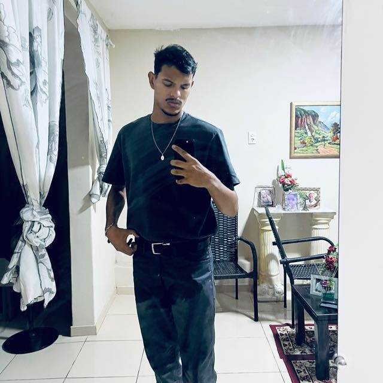
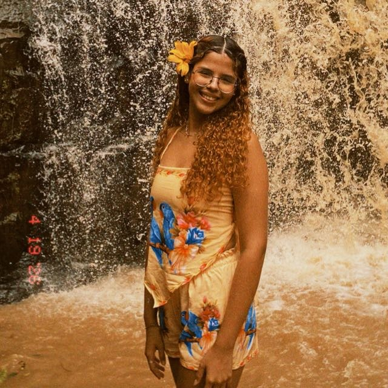
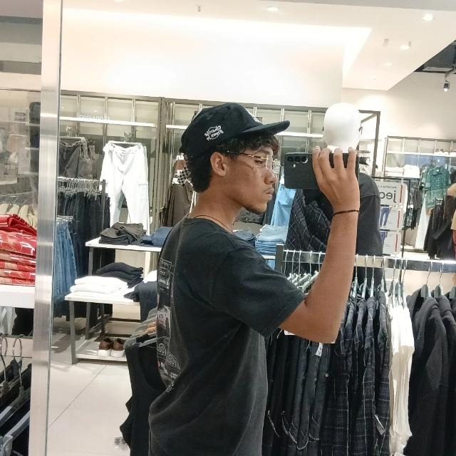
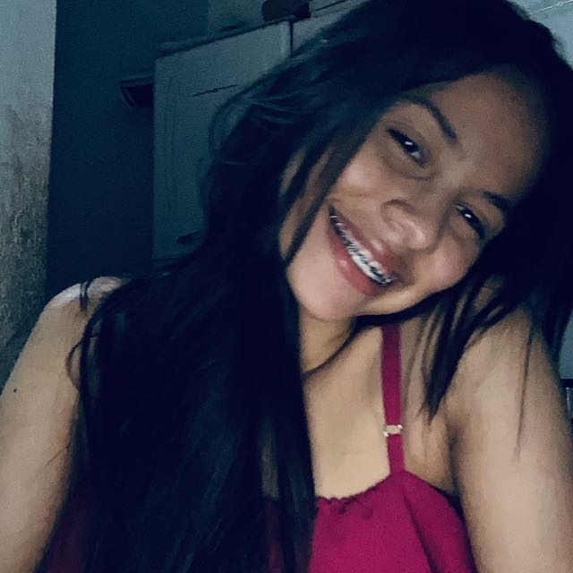
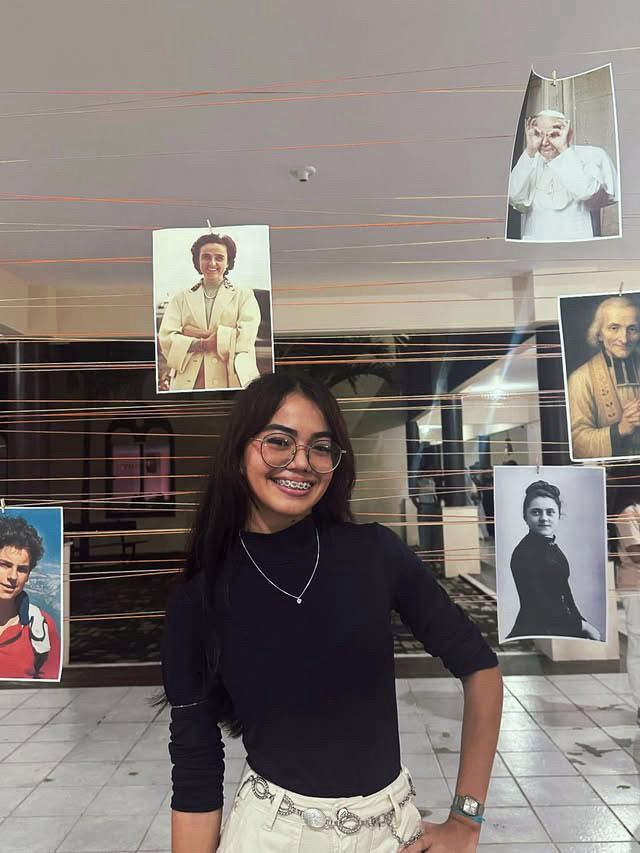
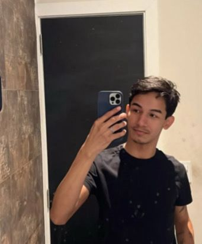
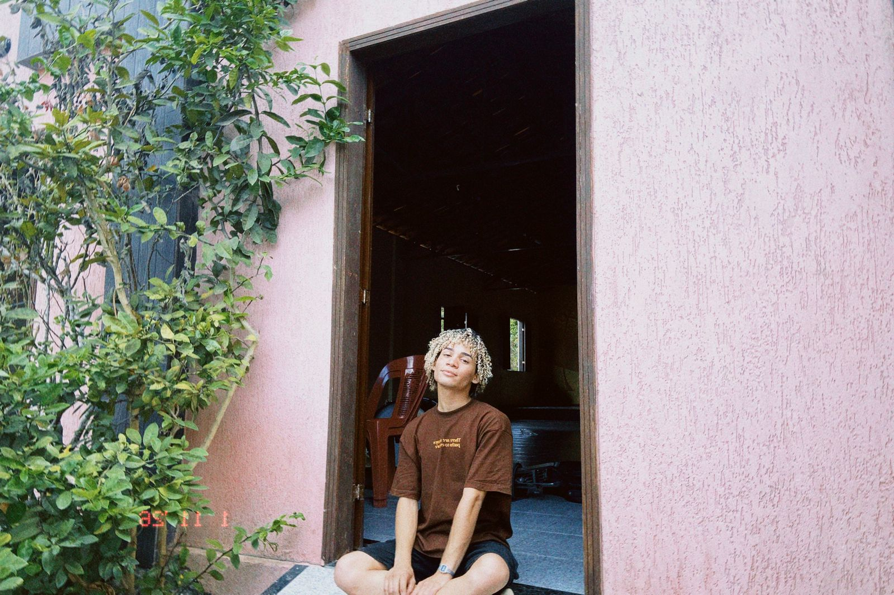

KERO DEUS
Salva vidas, transforma corações
Faltam poucos dias para o acampamento:


Camisa Oficial
Encomendas encerradasMuito mais que uma camisa
A nossa camisa oficial foi desenhada para unir conforto e identidade. Feita com material de alta qualidade, ideal para todos os momentos do acampamento.
Tecido premium e confortável
Modelagem unissex
Alta durabilidade
Tamanhos disponíveis: do PP ao XGG
Viva a Experiência
O Kero Deus é um acampamento que salva vidas, transforma corações e aproxima jovens de Deus.


Playlist Oficial
Ouça as músicas que vão marcar o nosso acampamento. Sintonize o coração desde já!
O que é o Kero Deus?
Vidas que foram transformadas pelo Kero Deus!

Davi Araujo
"O Kero Deus é uma experiência tão incrível que se torna única e especial em cada edição. É algo tão extraordinário que, muitas vezes, nem conseguimos imaginar a dimensão...

Valentina
"Costumo dizer que viver o Kero Deus é como experimentar um pedacinho do céu na Terra. São os melhores quatro dias, em que Jesus se utiliza de pequenas “desculpas”...

Erik Torres
"No meio da correria eu ouvi um chamado,suave como a brisa, porém tão delicado.Era Deus me chamando pra perto outra vez,curando em silêncio...
Luiza Teofilo
"O Kero Deus nunca foi apenas um acampamento. Na verdade, ele é uma das formas mais lindas que Deus encontrou para alcançar e salvar corações. Cada momento vivido ali é especial...

Maria Isadora
"Minha experiência com o Kero Deus é simplesmente inexplicável. O KD é renovação, confirmation e a oportunidade que Deus me dá para recomeçar...

João
"O Kero Deus é salvação, foi salvação e continua sendo vida! Uma pequena estrofe é pouco para descrever o Kero Deus...

Lavi
"Eu amo o Kero Deus porque foi n’Ele que encontrei meu verdadeiro lar. E quem carrega Cristo de verdade está destinado a viver o extraordinário. ✨"

Pedro Melo
"Para mi, o “Kero Deus” significa salvação, alegria e um verdadeiro encontro com Deus.Não tenho palavras suficientes...

Guilherme
"O Kero Deus, para mim, é muito mais do que um retiro. É como se fosse meu lar, o lugar onde meu coração finalmente encontra paz. São quatro...
🎒 O que levar
Prepare sua bagagem com tudo o que você precisa para viver essa experiência única
Bíblia e Terço
Leve sua Bíblia e seu terço para os momentos de oração, missa e adoração.
Roupas leves, confortáveis e para o frio
Camisetas, bermudas, shorts, calças leves para o dia. Leve também um agasalho, moletom ou jaqueta, pois a serra esfria à noite.
Roupas para as festas
Trajes à vontade, criativos e confortáveis para celebrarmos juntos.
Calças ou vestidos longos
Para usar nos momentos na capela (missa, adoração).
Produtos de higiene pessoal
Escova, pasta, sabonete, shampoo, desodorante, toalha, lençol ou saco de dormir.
Medicamentos (se necessário)
Caso faça uso contínuo, não se esqueça de seus remédios. Leve também um pequeno kit de primeiros socorros.
Garrafa de água
Mantenha-se hidratado durante toda a programação.
Rede
Para quem gosta de dormir na rede – uma opção bem-vinda nos momentos de descanso.
Coração aberto
O mais importante: venha com disposição para um encontro verdadeiro e transformador com Deus.
✨ “Prepara o teu coração, porque Deus vai fazer algo novo em você!” ✨
Dúvidas Frequentes
Tire suas principais dúvidas sobre o acampamento
📅 Quando e onde será o próximo acampamento? +
👕 Ainda dá para comprar a camisa oficial? +
💰 Ainda posso me inscrever? +
🚌 Haverá transporte? De onde sai o ônibus? +
🙋 Sou menor de idade, posso ir sozinho(a) ou preciso de um responsável? +
Onde Será o Acampamento?
Sítio Fidalgo, Alcântaras - Ceará
Endereço do Acampamento
Sítio Fidalgo, 12 - Santo Antônio dos Fernandes
Alcântaras - CE, CEP: 62120-000
Ponto de Ônibus (ida e volta)
Comunidade Católica Marana Tá
R. Raimundo Rodrigues, 381 - Sinhá Sabóia
Sobral - CE, CEP: 62050-370
Camisa Oficial
As encomendas da camisa oficial foram encerradas. Obrigado a todos que já garantiram a sua!
Encomendas EncerradasInscrições Encerradas
As inscrições para o Acampamento Kero Deus 2026 já foram encerradas, pois alcançamos o número máximo de vagas.
Fique de olho nas nossas redes sociais para não perder as próximas novidades e a abertura da próxima edição! 🙏